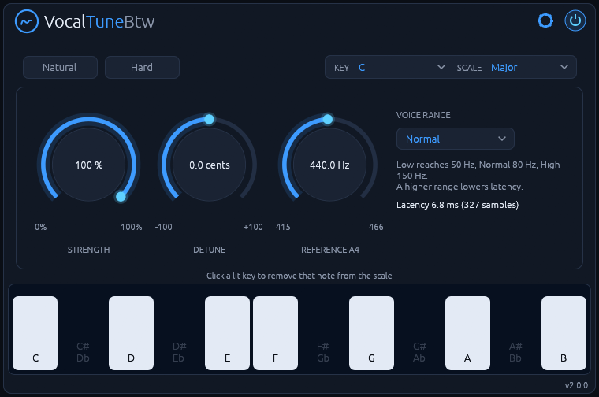

VocalTuneBtw listens to a single voice, finds the nearest note in the key and scale you choose, and glides the voice onto it. Set it fast for the hard, robotic snap. Set it slow for transparent correction that keeps vibrato and slides intact.
It runs natively on Linux, with no network access and no telemetry.
Read the manual for every control and how to use it.
Features
- Key and scale snapping: 12 root notes and 14 scales, with per-note control on the keyboard.
- Retune Speed from 1 to 200 ms, with one-click Natural and Hard presets.
- Humanize: notes already close to the target are left alone.
- Strength, Detune and Reference pitch: partial correction, ±100 cents, A4 from 415 to 466 Hz.
- Live tuning meter: the target note, its octave and the deviation in cents.
- Low latency: 3.8 to 10.8 ms depending on the voice range, reported to the host.
Install
Download the latest version from the Releases page, or with these commands:
curl -LO https://github.com/rmnhofma/VocalTuneBtw-release/releases/download/v2.0.5/VocalTuneBtw-2.0.5-linux-x86_64.tar.gz
curl -LO https://github.com/rmnhofma/VocalTuneBtw-release/releases/download/v2.0.5/VocalTuneBtw-2.0.5-linux-x86_64.tar.gz.sha256
sha256sum -c VocalTuneBtw-2.0.5-linux-x86_64.tar.gz.sha256 && tar xzf VocalTuneBtw-2.0.5-linux-x86_64.tar.gz
cd VocalTuneBtw-2.0.5-linux-x86_64
Install for your user:
mkdir -p ~/.clap ~/.vst3
rm -f ~/.clap/VocalTuneBtw.clap && cp VocalTuneBtw.clap ~/.clap/
rm -rf ~/.vst3/VocalTuneBtw.vst3 && cp -r VocalTuneBtw.vst3 ~/.vst3/
Or for all users:
sudo mkdir -p /usr/lib/clap /usr/lib/vst3
sudo rm -f /usr/lib/clap/VocalTuneBtw.clap && sudo cp VocalTuneBtw.clap /usr/lib/clap/
sudo rm -rf /usr/lib/vst3/VocalTuneBtw.vst3 && sudo cp -r VocalTuneBtw.vst3 /usr/lib/vst3/
Removing the old copy first avoids overwriting a file a running host has loaded. Then rescan plugins in your DAW.
To uninstall:
rm -rf ~/.clap/VocalTuneBtw.clap ~/.vst3/VocalTuneBtw.vst3
Upgrading from 1.x
2.0 is a rewrite that sounds the same, and it keeps the plugin IDs, so projects saved with 1.x find it. They open with default settings, though, and CLAP automation of some parameters doesn't carry over. Set the plugin up again in old projects.
Requirements
- Linux x86-64 with glibc 2.31 or newer (Ubuntu 20.04, Debian 11, Fedora 32 and newer)
- A CLAP or VST3 host
- X11 or XWayland, and a Vulkan driver for the editor
Releases contain the CLAP and VST3 plugins only.
License
MIT, see LICENSE. The licenses of the third-party code in the binaries are in
THIRD-PARTY-LICENSES.txt in each release archive.
VST is a registered trademark of Steinberg Media Technologies GmbH. CLAP is an open standard by the free-audio project. VocalTuneBtw is an independent project, not affiliated with or endorsed by Steinberg.
Screenshots

